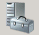

操作场景
- 首次登录ServiceCenter前需配置浏览器，以便能够使用浏览器正常登录并进行相关操作。如果在安装阶段已完成浏览器的配置，则不需要重复配置。
- 除“Google Chrome”浏览器之外，“Internet Explorer”和“Firefox”浏览器均需配置完成才可使用。
前提条件
- 已获取所要求版本的浏览器。
- 已获取ServiceCenter管理节点浮动IP地址。
IE浏览器配置
操作以配置“Internet Explorer 9.0”浏览器为例。
- 用于登录ServiceCenter的系统类型是否为“Windows Server 2008”？
- 是，执行22。
- 否，任务结束。
- 在操作系统界面，单击任务栏的 。
进入“服务器管理器”界面。
- 在区域选择“配置IE ESC”。
弹出“Internet Explorer 增强的安全配置”对话框。
- 将“管理员”和“用户”的选项均选择为“禁用”后，单击“确定”。
完成Internet Explorer增强的安全配置。
兼容性视图设置
开发人员工具设置
Internet选项设置
安全配置
Firefox浏览器配置
操作以配置“Firefox 24.0”浏览器为例。
- 打开Firefox浏览器。
- 选择。
弹出“选项”对话框。
- 选择。
- 将Firefox的更新策略设置为“检查更新，但是让我选择是否安装”。
 说明： 由于ServiceCenter兼容的Firefox浏览器版本为“Firefox 21.0”到“Firefox 30.0”的正式版本，因此请勿更新为其他版本。
说明： 由于ServiceCenter兼容的Firefox浏览器版本为“Firefox 21.0”到“Firefox 30.0”的正式版本，因此请勿更新为其他版本。 - 单击“确定”。
- 在地址栏中，输入ServiceCenter的网络地址，按“Enter”。
地址格式为http://ServiceCenter管理节点浮动IP地址。
例如，在Firefox浏览器地址栏中，输入“http://192.168.40.2”。
- 展开“我已充分了解可能的风险”，单击“添加例外”。
弹出“添加安全例外”界面。
- 确认“永久保存此例外”勾选后，单击“确认安全例外”。
完成Firefox浏览器的配置。